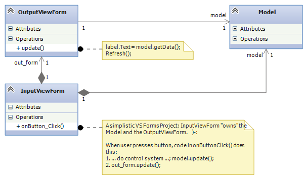
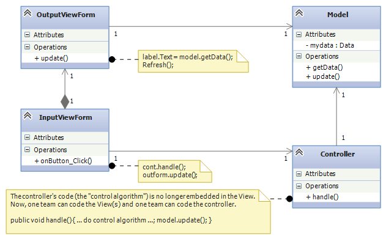
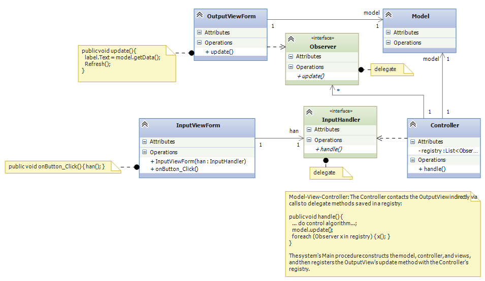
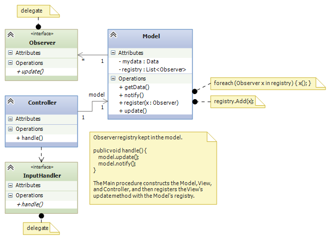
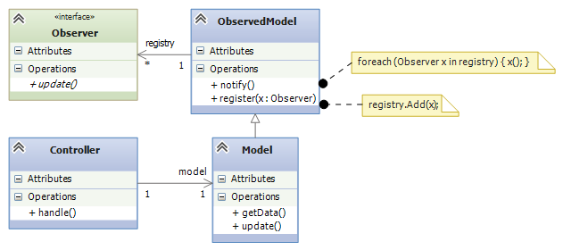

Course Notes — CIS 501: Software Architecture and Design, Fall 2014
The ending of the previous lecture should have you wondering — what is the best way to design a single-user reactive software system with “independent” sub-assemblies?
This question also intrigued the researchers at Xerox’s Palo Alto Lab (PARC) in the 1970s when they wrote the first GUI-based systems in Smalltalk, a Simula67-like object language implemented on top of Lisp.
The Xerox researchers quickly learned that it was critical to isolate the assemblies so that there was independent development, containment of execution errors, smooth maintenance, and component reuse. The style of connectivity they used became known as the Model-View-Controller (MVC) software architecture. We will study it here.
A component, A, is coupled to component, B, if A depends on B, in the sense of UML class diagrams — A‘s code needs B‘s code to compile; if B‘s public fields and methods are changed, then A‘s coding must change; if B works incorrectly, then so will A; if A is extracted for reuse in a new system, B must be extracted, too. Large software systems must minimize coupling so that compile errors and execution errors are limited in scope; components can be tested, plugged, unplugged, and replaced easily; and sub-assemblies can be saved and reused in subsequent systems.
Couplings are a key feature in modern software architectures. Here is an important case study:
Software systems like games, spreadsheets, and IDEs accept input from multiple sources and produce output to multiple windows.
A standard example is an IDE like Visual Studio: It consists of multiple windows (main window, edit window, toolbox window, solution window, and debug windows). Input is entered into all of these windows (text entry and mouse clicks), and input entered into one window can affect multiple other windows. (Example: you type the text for a label in the solution window, and the change shows in the solution window and also in the edit window. Or, you click “Start Debug” in the main window, and a breakpoint appears in the edit window and the call stack and local variables appear in the debug windows.)
It is a major problem coordinating input and output when there are multiple windows (Forms). We now study the architectures that might apply.
Let’s consider the simplest version of this problem: A baby reactive toy uses a model (data structure + operations), a controller (algorithm/protocol), and wo views (forms), one that accepts input and the other that displays output — input entered into the input view causes computation on the model and generates changes to the output view, which displays information from the model.
This is a naive Visual-Studio-style implementation, where the controller code is coded inside the private void button_Click(object sender, EventArgs e) method, which sits in the InputViewForm class, which itself owns all the system’s components:
The relevant code for this diagram reads like this:
public partial class InputViewForm : Form {
private Model model = new Model();
private OutputViewForm form = new OutputViewForm();
public InputViewForm() { InitializeComponent(); }
private void onButton_Click(object sender, EventArgs e) {
//...
model.update();
out_form.update();
}
}
static class Program {
static void Main() {
Application.EnableVisualStyles();
Application.SetCompatibleTextRenderingDefault(false);
Application.Run(new InputViewForm());
}
}
This is bad. It is bad because the entire system lives in the Form that handles input events. How can one team (typically the software engineers) develop the control and the model and another team (typically the graphical designers) develop the view, when all of these are mixed into one file?
Further, how can the components be extracted for reuse in future systems? And, why should a GUI with a button “own” the output form and also the system’s model (data base)? Will this architecture generalize to multiple forms where each form accepts input and shows output?
The above doesn’t sound good, and the problem is that there is “too much”/”too strong” coupling (dependency). There is a simple way to measure “degree of coupling” of a class-diagram assembly, A, in terms of A‘s sub-assemblies:
Let N(A) is the number of classes in A. Define the number of sub-assemblies, S(A), as the number of subgraphs of A that contain at least one class and have no outgoing edges.
(An edge in a subgraph is outgoing if it starts at a node in the subgraph and has an arrow to a node outside the subgraph.)
Diagram A‘s coupling ratio, C(A), is the ratio of sub-assemblies per class: C(A) = S(A) / N(A).
The larger the value of C(A), the better — If there are more subassemblies per component, this means there are more possible ways of disassembling the system so that we can design, code, and test the system in stages. We can also find more ways of disassembling the system so that we can reuse its parts in other systems.
For the above architecture, V1, we have S(V1) = 3 and C(V1) = 3/3 = 1. That is, there are only 3 sub-assemblies (including the entire system) that we can extract and reuse out of this 3-component system. We can do better.
We simply must untangle the controller code and model from the views: We extract the control code from the event-handler method (private void button_Click(object sender, EventArgs e)) in the input form and place it in its own class. Also, the model is not owned by any other assembly:
This is better. When you implement this architecture in Visual Studio, construct and connect the InputView, Controller, and Model objects in the Main method of Program.cs. (For the above, the OutputView is still constructed and owned by the InputView.) Here’s how to do it:
public partial class InputViewForm : Form {
private OutputViewForm out_form;
private Model model;
private Controller cont;
public InputViewForm(Controller c, Model m) {
InitializeComponent(); cont = c; model = m;
out_form = new OutputViewForm(model);
}
private void onButton_Click(object sender, EventArgs e) {
cont.handle(); out_form.update();
}
}
static class Program {
public void Main() { // construct and connect the components here:
Model m = new Model();
Controller c = new Controller(m);
InputViewForm i = new InputViewForm(c, m);
// ...
Application.Run(i); // give control to the input view
}
}
Now, the Main method’s code documents the software architecture — you read it first to learn about the system. Also, this architecture makes it easier to extract sub-assemblies for coding, testing, and future reuse.
For this system, V2, we have S(V2) = 5 and C(V2) = 5/4 = 1.25, better than before.
It is still a (minor) problem that the input view owns and contacts the output view. Also, we would like to separate (decouple) the input view from the controller. This is because the input view (the “user interface”, the “GUI”) is often developed in a different language and in a different design tool than C#/Visual Studio.
Finally, modern GUI-based systems (like Visual Studio!), use multiple input views/forms and also multiple output views/form. We want a software architecture where it is easy to add and remove views, even while the system is executing. (Think about how windows appear and disappear when you run Visual Studio. What happens is more that just Showing and Hide-ing windows — windows are constructed, attached, used, removed, and deallocated.)
Now we study the first version of the Model-View-Controller (MVC) architecture. This version works well when there is just one controller object that handles all input events and does all model updates:
The key(s) are the delegate declarations. (Recall that a delegate is an “interface/data-type that specifies a single method.”)
The remaining dependencies are:
The Main method assembles the system and registers the Observer (s):
// the type of method that handles input events:
public delegate void InputHandler();
// the type of method that calls output views when there is a "model-update event":
public delegate void Observer();
static class Program {
public void Main() {
Model m = new Model();
Controller c = new Controller(m);
InputViewForm i = new InputViewForm(c.handle); // recall that c.handle has type InputHandler
OutputViewForm f = new OutputViewForm(m);
f.Show(); // C# requires that you tell an output form to show itself
c.register(f.update); // f.update has type Observer
// ...
Application.Run(i);
}
}
When there is an input event, the InputViewForm‘s onButton_Click method (indirectly) calls handle in the controller, which executes the algorithm/protocol for the input event. The input view/form is not coupled to any controller or model. This makes it easy to develop the input view separately from the rest of the system.
When the controller does a model update, all methods saved in registry are called. So, the controller is not coupled to any view. This makes it easy to extend the system to have multiple forms (views) for inputs and outputs, like a spreadsheet or IDE does. It makes it easy for views to “come and go” while the system is executing. This is a standard technique in systems building, maybe the most important one you will learn in this course.
For this system, call it, V3, we have S(V3) = 9, and C(V3) = 9/4 = 2.25, which shows marked improvement.
An important variation on the above is to save the registry in the Model. Here is the revised sub-assembly:
This arrangement can be used when there are multiple input views, each of which contacts a distinct controller object to update the model. In such a situation, the registry cannot be saved in any one of the controllers, so we can save it with the model.
The previous arrangement is a bit less attractive because Model components (“data structures”) are rarely written with registries embedded in them. This flaw is repaired in Version 4, below.
Principles of MVC design
Here is an improvement on the immediately previous architecture, where there are multiple controllers that update the model: We store the registry of observers in a super-class to which the model attaches:
Now, the model component extends (is a subclass of) an “observed model”, which is a class that holds the registry. This last pattern was the version of MVC developed by the Xerox PARC team. It is called the Observer design pattern. Here is the pattern of coding you can use:
public delegate void InputHandler(...); // data type of input-event methods
public delegate void Observer(); // data type of output-refresh methods
public abstract class Observed Model { // "abstract" means "unfinished"
private List registry = new List();
public void register(Observer x) { registry.Add(x); }
public void notify() { foreach(Observer x in registry) { x(); } }
}
public class Model : ObservedModel {
private Data mydata;
// ...
public void update(...) { mydata = ...; }
public string getData() { ... return mydata; }
}
public class Control {
private Model m;
// ...
public void handle(...) { m.update(...); m.notify(); }
}
public class InputViewForm {
private Button button1;
private InputHandler han;
// ...
public void button1_Click(...) { han(...); }
}
public class OutputViewForm {
private Label label1;
private Model m;
// ...
public void repaint() { label1.Text = m.getData(); this.Refresh(); }
}
public class Program {
public static void Main() {
// ...
Model model = new Model();
Control c1 = new Control(model);
InputViewForm f1 = new InputViewForm(c1.handle);
Control c2 = new Control(model);
InputViewForm f2 = new InputViewForm(c2.handle);
OutputViewForm o1 = new OutputViewForm(model);
model.register(o1.repaint);
OutputViewForm o2 = new OutputViewForm(model);
model.register(o2.repaint);
f1.Show(); f2.Show(); o1.Show(); o2.Show();
Application.Run();
}
}
The subclass arrangement places the registry in a central place, at the model object, so that multiple forms and controllers can correctly share the model. Also, the observed model knows nothing about the class names of the forms that link to it — it is completely decoupled from the view assembly.
The key feature of MVC architecture is the “triad” or “triangle topology” of assembly:
IN/OUT Views
| \
| \
| \
V V
Controller ---> Model
The connection of output view to model, along with Step 3, are called the Observer design pattern. A design pattern is a coding scheme for doing some task correctly in an object language. In this case, the Observer design pattern gives a solution to the problem of updating multiple output views when a model has changed value.
Once again, here are some principles of MVC design
We will encounter more design patterns as we study more architectures.
The MVC architecture works great for systems with multiple input and output views/forms. There are two important alternatives:
For very simple reactive systems, where there is just one, simplistic view, we have this greatly simplified variant of MVC, called Model View Presenter. It has a linear topology and uses function call-return to do its work:
In&OutView 1. In&OutView calls Presenter with input event.
| 2. Presenter computes answer, updates Model,
V and queries Model for new values of data.
Presenter Presenter returns the new data values as
| the answer to the call in Step 1.
V 3. In&OutView displays the returned answer.
Model
The architecture places a burden on the Presenter component, which both implements the system’s algorithm and knows exactly the data that must be displayed. You will find this architecture in some business systems, e.g., an ATM connected to a bank or a calculator tool — the output view shows just a single number or a single string.
This architecture was developed by Microsoft (and called “Model View ViewModel”) to match their WFP and Silverlight system, but it resembles the layout used in many Enterprise Information Systems (EIS). It is a “web-browser-view plus model plus controller”:
Say we have a general-purpose output view, essentially a web-browser, that can show output formatted in some XML-like language. (XML is a “bracket language”; HTML is one instance of XML).
The controller not only signals the model to do updates, but it then fetches updated data from the model and formats it as an XML document. Then the output view fetches the XML document and displays it:
InView OutView
| |
V V
Binder - ->delegate Observer
|
V
Model
The controller is called a “Binder”, because it does data bindings of the model’s data to names and layout in the XML document it builds:
Like the Presenter component, the Binder has multiple responsibilities. Unlike the Presenter, the Binder organizes in a semantically important way how the data must be viewed. Note that the Binder is not coupled to the OutView, so that the Binder and the Model can be designed and tested independently of the views.
When used for internet commerce, the InView and OutView are often merged together as a web browser or some XML/HTML-based viewer. The Binder is often a “proxy object” (we study this notion later) that was specially constructed by the Model and sent over the Web to the web browser to act as that browser’s personal Binder. The Binder contains the “business logic” for doing the commerce transactions.
Do not do this:
Perhaps the worst layout for a reactive system would be just one view/form that implements both input and output with this pattern of communication:
In&OutView 1. View contacts Controller
| ^ 2. Controller updates Model
V | 3. Model sends updated info to View
Controller --> Model
Beginners code reactive systems like this; there is only one subassembly of this “circular” system!
C measures coupling. We say that a revised architecture is more weakly coupled than its predecessor if its C measure is higher.
Weaker coupling means more independence of components and more sub-assemblies — more ways to disassemble, code, test, unplug, replug, reuse.
Weaker coupling is good.
A system is strongly coupled if its components depend on many other components, meaning fewer subassemblies exist. Strong coupling is bad.
The coupling measure, C(A), of assembly A is not the final judge of A‘s quality, but as a rough rule, C(A) should be at least 1.0 — otherwise, something is wrong if a component system cannot be untangled into as many sub-assemblies as there are pieces in the assembly. In such a case, there is no benefit from writing the assembly in pieces. (The underlying problem might be a lack of cohesion, which we study next.)
A controller holds a system’s algorithm. An algorithm is a script of commands or a protocol for maintaining and using the system’s data structure(s).
Say you have a reactive system that maintains two data structures (model/entity classes) A and B. The system has just one boundary class (view class) with one or more buttons. Sometimes, a button press triggers an update to data structure, A, and sometimes, a button press triggers an update to data structure, B. There are no relationships between A and B.
A simple implementation of the system would use one controller that executes the A-update algorithm and the B-update algorithm:
+--> A
/
View --> ControllerForAandB
\
+--> B
This architecture, call it X1, is simple, but the controller is actually two algoriithms — one for A and one for B — unnaturally glued together; note that S(X1) = 5, and C(X1) = 1.25.
Since A and B are unrelated, so should be their controllers:
+--> ControllerForA --> A
/
View
\
+--> ControllerForB --> B
This architecture, call it X2, is better, because it exhibits distributed control — the update algorithms in the controllers are married to the entities (models), not the view. We have S(X2) = 9 and C(X2) = 1.8. This is a reminder that:
Distributed control is good.
This small example should make us think about how large systems sometimes use algorithms that are naturally divided into pieces, depending on the data structures they use. This is not exactly a radical idea — the main reason for writing procedures/subroutines in a program is to divide up the algorithm into natural, understandable pieces.
We consider the development of controllers in a future lecture.
The previous experiment with data structures A and B showed that something was “wrong” with a controller that held two unrelated protocols, one for A and one for B. “Unrelatedness” is bad for classes in object languages; each class should present exactly one concept, and all the members (fields and methods) in the class are about that one concept.
A component is cohesive if it is “about” one concept. We can understand the notion by looking at coding style. This class is “about” the concept of a playing card:
public class Card {
public readonly Count count;
public readonly Suit suit;
public Card(Count a, Suit b) { count = a; suit = b; }
public int BJvalue() {
int i = (int)count + 1;
if (i > 10) { i = 10; } // in Blackjack, face cards have value 10
return i;
}
public override string ToString() { return count + " of " + suit; }
}
In general, a cohesive class will manage one data structure, along with a few primitive variables related to the structure:
// This models one real-life entity:
class OneFormOfEntity {
// there is a primary data structure that characterizes the entity:
private ... oneDataStructureThatHoldsTheEntitysKnowledge;
// additional fields might help maintain the data structure:
private int aPrimitiveVarThatIsCountingSomething;
// the constructor method initializes the fields:
public OneFormOfEntity(valuesForInitializingTheEntity) {
// ...
}
// methods define abilities that the entity has
// (i) to say and do things and (ii) to learn things.
// Each method uses most or all of the fields to do its work.
public SomeProperty DoSomethingLookupSomething(....) {
// ...
}
public void LearnSomethingUpdateSomething(...) {
// ...
}
}
The class is about modelling one entity — one card player or one card or one spreadsheet or one text file or one widget.
In contrast, a class that, say, defines both the structure of a playing card as well as the structure of a card deck has poor cohesion, because it is “about” two entities.
A cohesive component has fields that are referenced by almost all of its methods. Here is the “litmus test” that you use: a cohesive class cannot be rewritten into two separate classes without damaging (recoding) most of its methods.
If you like numbers, here is a formula for calculating a numerical score of cohesion:
Say that class D has F(D)-many fields and M(D)-many methods. Say that field fi is referenced by mi-many methods in D. Then, the cohesion of D, called H(D), is related to the number of times each of D‘s fields is referenced by D‘s methods:
H(D) = (m1 + m2 + ... + mM) / (F(D) * M(D))
H measures the percentage of fields required by each method. The maximal cohesion value is H(D) = 1 — every field is required by every method. For example, for this class:
public class Card {
public readonly Count count;
public readonly Suit suit;
public Card(Count a, Suit b) { count = a; suit = b; }
public int BJvalue() {
int i = (int)count + 1;
if (i > 10) { i = 10; } // in Blackjack, face cards have value 10
return i;
}
public override string ToString() { return count + " of " + suit; }
}
H(Card) = (3 + 2)/(2*3) which equals 0.83 (because count is referenced by 3 methods and suit is referenced by 2 methods). If you do some calculations, you will find that well-written, “cohesive” classes have H-values near 1, and non-cohesive classes (those that can be readily rewritten into two classes without recoding many methods) have H-values less than 0.5. The net result is that using a cohesive component in a system means the system will have weak(er) coupling — the component does not cause a “cluster” of dependent components to form around it.
The definitions of C and H are my own invention, meant to give you a concrete way to measure coupling and cohesion.
There is an area of experimental computing, called software metrics, that studies mathematical formulas for blueprints and code and applies the formulas to predict development times, maintenance costs, and “software complexity”. You can look at the Wikipedia page for examples. (There are entries about how people have tried to measure coupling and cohesion in real-world systems.)
Visual Studio can compute code metrics values for your solution automatically (see MSDN’s Measuring Complexity and Maintainability of Managed Code article).
—
This note was adapted from David Schmidt's CIS 501, Spring 2014, Lecture 6 course note. © Copyright 2014, David Schmidt.